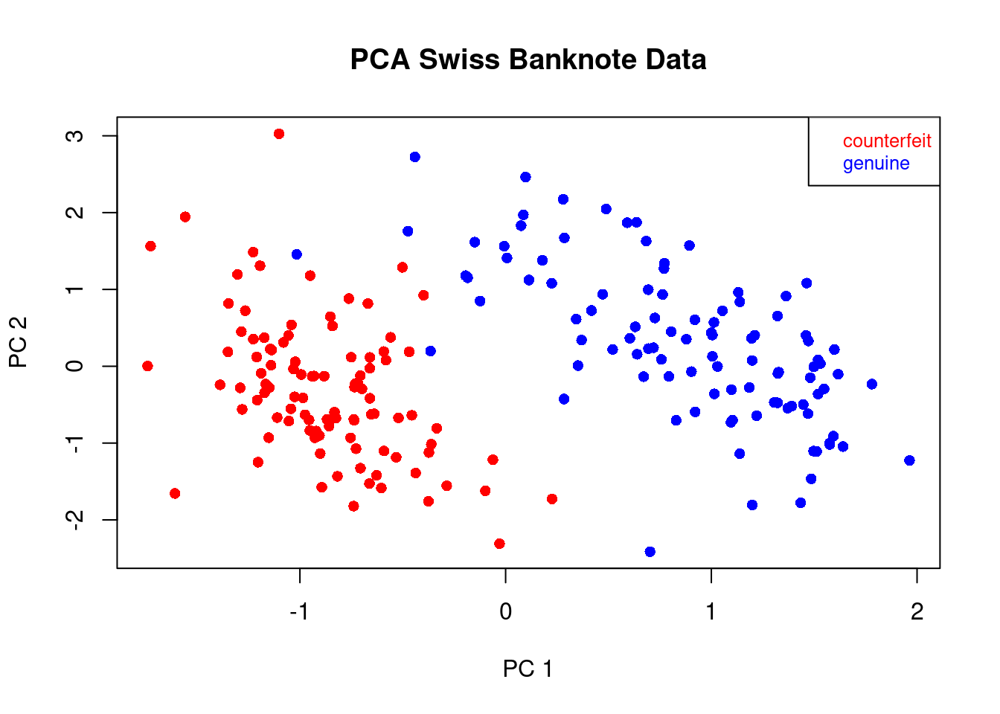
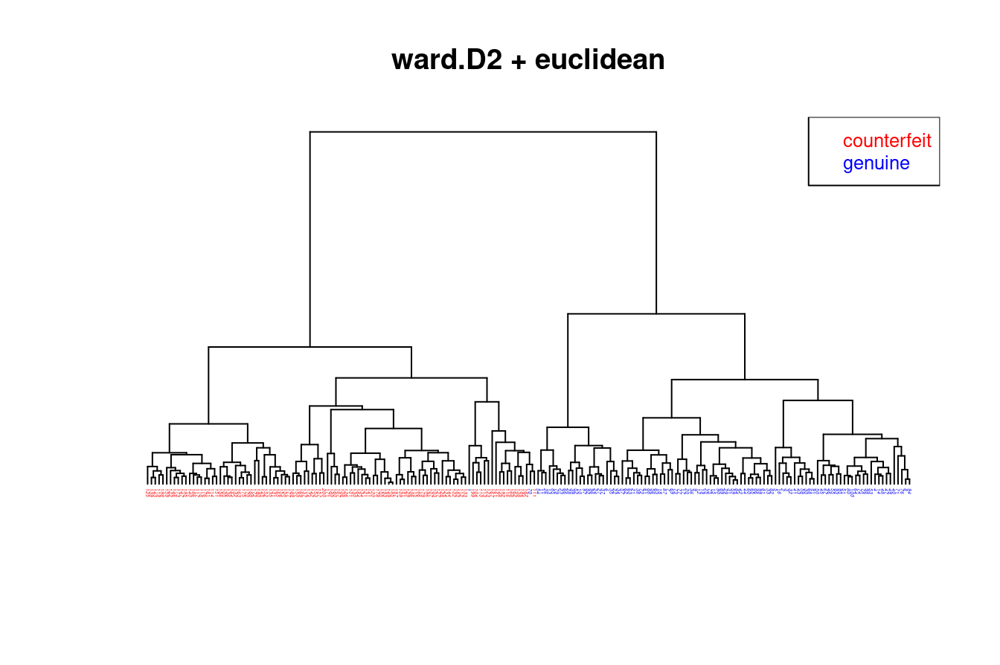

3 Clustering / unsupervised Learning
3.1 Overview of clustering
3.1.1 General aim
Find structure and gain insights in data \(\boldsymbol x_1, \ldots, \boldsymbol x_n\) collected on \(n\) objects by categorising the objects into groups based on the \(d\) features (= the \(d\) components in \(\boldsymbol x_i\)) obtained for each object.
In machine learning / statistical learning this process is called unsupervised learning or clustering, and there are many algorithms and procedures to automatise and quantify this process.
Unsupervised learning is a very hard problem!
Note that unsupervised learning the class labels are a priori unknown, and are learned in the process of clustering. In contrast, in supervised learning the class labels are known, at least for the training data set.
Recalle the Isis flower data (from Worksheet 4): PC1 vs. PC2 shows clear visual grouping into 2-3 clusters:
Thus, by clustering this data we aim to identify this structure that is visualised here by the given class labels.
Two extremes in clustering:
- put all objects into a single cluster (low complexity model)
- put each object into its own cluster (high complexity model)
In both instances nothing new has been learned! In practise, the aim is to find a compromise, i.e. a model that captures the structure in the data with appropriate complexity (not too low and not too complex).
Questions / Problems:
- how do we define clusters?
- how do we learn / infer clusters?
- how many clusters? (this is surprisingly difficult!)
- which features define / separate each cluster?
- uncertainty of clusters?
\(\Longrightarrow\) Clustering / partitioning / structure discovery is not easy!
\(\Longrightarrow\) We cannot expect perfect answers or a single “true” clustering (this is related to the problem of model selections, many differnt clusterings may fit the data equally well)
\(\Longrightarrow\) Ideally we would wish to get information about the uncertainty of the clustering solution (e.g. by considering sets of possible clusters)
3.1.2 Why is clustering difficult?
Partioning problem (combinatorics): How many partitions of \(n\) objects (say flowers) into \(K\) groups (say species) exists?
Answer:
\[ S(n,K) = \left\{\begin{array}{l} n \\ K \end{array} \right\} \] this is the “Sterling number of the second type”.
For large n: \[ S(n,K) \approx \frac{K^n }{ K!} \] Example:
| \(n\) | \(K\) | Number of possible partitions |
|---|---|---|
| 15 | 3 | \(\approx\) 2.4 million (\(10^6\)) |
| 20 | 4 | \(\approx\) 2.4 billion (\(10^9\)) |
| \(\vdots\) | ||
| 100 | 5 | \(\approx 6.6 \times 10^{76}\) |
These are enormously big numbers even for relatively small problems!
3.1.3 Common types of clustering methods
There are very many different clustering algorithms!
We consider the following two broad types of methods:
- Algorithmic clustering methods (these are not explicitly based on a probabilistic model)
- \(K\)-means
- PAM
- hierarchical clustering (distance or similarity-based, divise and agglomerative)
pros: fast, effective algorithms to find at least some grouping
cons: no probabilistic interpretation, blackbox methods
- Model-based clustering (based on a probabilistic model)
- mixture models (e.g. Gaussian mixture models, GMMs, non-hierarchical)
- graphical models (e.g. Bayesian networks, Gaussian graphical models GGM, trees and networks)
pros: full probabilistic model with all corresponding advantages
cons: computationally very expensive, sometimes impossible to compute exactly.
3.2 Hierarchical clustering
3.2.1 Tree-like structures
Often, categorisations of objects are naturally nested, i.e. there sub-categories of categories etc. Thes can be represented by tree-like hierarchical structures.
In many branches of science hierarchical clusterings are widely employed, for example in evolutionary biology: see e.g.
- Tree of Life with linking the three natural kingdoms
- phylogenetic trees among species (e.g. vertebrata)
- population genetic trees to describe human evolution
- taxonomic trees for plant species
- etc.
Note that when visualising hierarchical structures typically the corresponding tree is depicted facing downwards, i.e. the root of the tree is shown on the top, and the tips/leaves of the tree are shown at the bottom!
In order to obtain such a hierarchical clustering from data two opposing strategies are commonly used:
- divisive or recursive partitioning algorithms
- grow the tree from the root downwards
- first determine the main two clusters, then recursively refine the clusters further
- agglomerative algorithms
- grow the tree from the leafs upwards
- successively form partitions by first joining individual object together, then recursively join groups of items together, until all is merged.
For example, \(K\)-means can be turned into a divisive hierarchical clustering algorithm by recursively applying the algorithm with \(K=2\).
In the following we discuss a number of popular hierarchical agglomerative clustering algorithms that are based on the pairwise distances / similarities (a \(n \times n\) matrix) among all data points.
3.2.2 Agglomerative hierarchical clustering algorithms
A general algorithm for agglomerative construction of a hierarchical clustering works as follows:
Initialisation:
Compute a dissimilarity / distance matrix between all pairs of objects where “objects” are single data points at this stage but later are also be sets of data points.
Iterative procedure:
identify the pair of objects with the smallest distance. These two objects are then merged together into a common set. Create an internal node in the tree to describe this coalescent event.
update the distance matrix by computing the distances between the new set and all other objects. If the new set contains all data points the procedure terminates.
For actual implementation of this algorithm two key ingredients are needed:
- a distance measure \(d(\boldsymbol a, \boldsymbol b)\) between two data points \(\boldsymbol a\) and \(\boldsymbol b\).
This is typically on of the following.
- Euclidean distance \(d(\boldsymbol a, \boldsymbol b) = \sqrt{(\boldsymbol a-\boldsymbol b)^T (\boldsymbol a-\boldsymbol b)}\)
- Manhattan distance \(d(\boldsymbol a, \boldsymbol b) = \sum_{i=1}^d | a_i-b_i |\)
- maximum norm \(d(\boldsymbol a, \boldsymbol b) = \underset{i \in \{1, \ldots, d\}}{\max} | a_i-b_i |\)
- etc
In the end, making the correct choice of distance will require subject knowledge about the data!
- a distance measure between two sets of objects \(A=\{\boldsymbol a_1, \boldsymbol a_2, \ldots, \boldsymbol a_{n_A} \}\) and \(B=\{\boldsymbol b_1, \boldsymbol b_2, \ldots, \boldsymbol b_{n_B}\}\) of size \(n_A\) and \(n_B\), respectively. The centroids of the two sets is given by \(\boldsymbol \mu_A = \frac{1}{n_A} \sum_{\boldsymbol a_i \in A} \boldsymbol a_i\) and \(\boldsymbol \mu_B = \frac{1}{n_B} \sum_{\boldsymbol b_i \in B} \boldsymbol b_i\).
To determine the distance \(d(A, B)\) between these two sets the following measures are often employed:
- complete linkage (max. distance): \(d(A, B) = \underset{\boldsymbol a_i \in A, \boldsymbol b_i \in B}{\max} d(\boldsymbol a_i, \boldsymbol b_i)\)
- single linkage (min. distance): \(d(A, B) = \underset{\boldsymbol a_i \in A, \boldsymbol b_i \in B}{\min} d(\boldsymbol a_i, \boldsymbol b_i)\)
- average linkage (avg. distance): \(d(A, B) = \frac{1}{n_A n_B} \sum_{\boldsymbol a_i \in A} \sum_{\boldsymbol b_i \in B} d(\boldsymbol a_i, \boldsymbol b_i)\)
Another agglomerative hierarchical procedure is Ward’s minimum variance approach. In this approach in each iteration the two sets \(A\) and \(B\) are merged that lead to the smallest increase in total within-group sum of squares (cf. \(K\)-means). Normally, the within-group \(A\) sum of squares \(w_A = \sum_{\boldsymbol a_i \in A} (\boldsymbol a_i -\boldsymbol \mu_A)^T (\boldsymbol a_i -\boldsymbol \mu_A)\) is computed on the basis of actual observations \(\boldsymbol a_i\) relative to their mean \(\boldsymbol \mu_A\). However, it is equally possible to compute it in terms of the squared pairwise differences between the observations using \(w_A = \frac{1}{n_A} \sum_{\boldsymbol a_i, \boldsymbol a_j \in A, i < j} (\boldsymbol a_i -\boldsymbol a_j)^T (\boldsymbol a_i -\boldsymbol a_j)\). This is exploited in Ward’s clustering method where the distance measure between to sets \(A\) and \(B\) is \(d(A, B) = w_{A \cap B} - w_A -w_B\). Correspondingly, between two data points \(\boldsymbol a\) and \(\boldsymbol b\) it is the squared Euclidean distance \(d(\boldsymbol a, \boldsymbol b) = (\boldsymbol a- \boldsymbol b)^T (\boldsymbol a- \boldsymbol b)\).
3.2.3 Application to Swiss banknote data set
This data set is reports 6 pysical measurements on 200 Swiss bank notes. Of the 200 notes 100 are fake and 100 are real. The measurements are: length, left width, right width, bottom margin, top margin, diagonal length of the bank notes.
PCA of this data shows that there are indeed two well defined groups, and that these groups correspond precisely to the real and fake banknotes:

We now compare the clusterings of the above four different hierarchical methods using Euclidean distance:
Ward.D2 (=Ward’s method):

Average linkage:
Complete linkage:

Single linkage:

Result:
- All four trees / hierarchical clusterings are quite different!
- The Ward.D2 method is the only one that finds the correct grouping (except for a single error).
In practical application of hierarchical clustering methods is is essential to evaluate the stability and uncertainty of the obtained groupings. This is often done as follows:
- “bootstrap” (i.e. resampling the original data) is used to generate new data sets (say 200) similar to the original one, and to construct a hierarchical clustering for each of these data sets.
- a consensus tree is computed from the 200 bootstrap trees. This reduces the variability of te estimated tree and also provides bootstrap values measuring the stability of each implied cluster in the tree.
Disadvantage: bootstrapping trees is computationally very expensive!
3.3 \(K\)-means clustering
3.3.1 General aims
- Partition the data into \(K\) groups, with \(K\) given in advance
- The groups are non-overlapping, so each of the \(n\) data points / objects \(\boldsymbol x_i\) is assigned to exactly one of the \(K\) groups
- maximise the homogeneity with each group (i.e. each group should contain similar objects)
- maximise the heterogeneity among the different groups (i.e each group should differ from the other groups)
3.3.2 Algorithm
For each group \(k \in \{1, \ldots, K\}\) we assume a group mean \(\boldsymbol \mu_k\).
After running \(K\)-means we will get estimates of \(\hat{\boldsymbol \mu}_k\) of the group means,
as well as an allocation of each data point to one of the classes.
Initialisation:
At the start of the algorithm the \(n\) observations \(\boldsymbol x_1, \ldots, \boldsymbol x_n\) are randomly allocated to one of the \(K\) groups. The resulting assignment is given by the function \(C(\boldsymbol x_i) \in \{1, \ldots, K\}\). With \(G_k = \{ i | C(\boldsymbol x_i) = k\}\) we denote the set of indices of the data points in cluster \(k\), and with \(n_k = | G_k |\) the number of samples in cluster \(k\).
Iterative refinement:
- estimate the group means by \[ \hat{\boldsymbol \mu}_k = \frac{1}{n_k} \sum_{i \in G_k} \boldsymbol x_i \]
- update group assignment: each data point \(\boldsymbol x_i\) is (re)assigned to the group \(k\) with the nearest \(\hat{\boldsymbol \mu}_k\) (in terms of the Euclidean norm). Specifically, the assignment \(C(\boldsymbol x_i)\) is updated to \[ \begin{split} C(\boldsymbol x_i) & = \underset{k}{\arg \min} \, | \boldsymbol x_i-\hat{\boldsymbol \mu}_k |_2 \\ & = \underset{k}{\arg \min} \, (\boldsymbol x_i-\hat{\boldsymbol \mu}_k)^T (\boldsymbol x_i-\hat{\boldsymbol \mu}_k) \\ \end{split} \] Steps 1 and 2 are repeated until the algorithm converges (or an upper limit of repeats is reached).
3.3.3 Properties
Despite its simplicity \(K\)-means is a surprisingly effective clustering algorithms. The final clustering depends on the initialisation so it is often useful to run \(K\)-means several times with different starting allocations of the data points.
As a result of the way the clusters are assigned in \(K\)-means this leads to cluster boundaries that form a Voronoi tesselation (cf. https://en.wikipedia.org/wiki/Voronoi_diagram ) around the cluster means.
Below we will also discuss the connection of \(K\)-means with probabilistic clustering using Gaussian mixture models.
3.3.4 Choosing the number of clusters
Once the \(K\)-means clustering has been obtained it is insightful to compute:
the total within-group sum of squares \(SSW\) (tot.withinss), or total unexplained sum of squares: \[ SSW = \sum_{k=1}^K \, \sum_{i \in G_k} (\boldsymbol x_i -\hat{\boldsymbol \mu}_k)^T (\boldsymbol x_i -\hat{\boldsymbol \mu}_k) \] This quantity decreases with \(K\) and is zero for \(K=n\). The \(K\)-means algorithm tries to minimise this quantity but it will typically only find a local minimum rather than the global one.
the between-group sum of squares \(SSB\) (betweenss), or explained sum of squares: \[ SSB = \sum_{k=1}^K n_k (\hat{\boldsymbol \mu}_k - \hat{\boldsymbol \mu}_0)^T (\hat{\boldsymbol \mu}_k - \hat{\boldsymbol \mu}_0) \] where \(\hat{\boldsymbol \mu}_0 = \frac{1}{n} \sum_{i=1}^n \boldsymbol x_i = \frac{1}{n} \sum_{k=1}^K n_k \hat{\boldsymbol \mu}_k\) is the global mean of the samples. \(SSB\) increases with the number of clusters \(K\) until for \(K=n\) it becomes equal to
the total sum of squares \[ SST = \sum_{i=1}^n (\boldsymbol x_i - \hat{\boldsymbol \mu}_0)^T (\boldsymbol x_i - \hat{\boldsymbol \mu}_0) \, . \] By construction \(SST = SSB + SSW\) for any \(K\) (i.e. \(SST\) is a constant independent of \(K\)).
If divide the sum of squares by the sample size \(n\) we get \(T = \frac{SST}{n}\) as the total variation, \(B = \frac{SSW}{n}\) as the explained variation and \(W = \frac{SSW}{n}\) as the total unexplained variation , with \(T = B + W\).
For deciding on the optimal number of clusters we can run \(K\)-means for various settings of \(K\) and then choose the smallest \(K\) for which the explained variation \(B\) is not significantly worse compared to a model with substantially larger number of clusters (see example below).
3.3.5 \(K\)-medoids aka PAM
A closely related clustering method is \(K\)-medoids or PAM (“Partitioning Around Medoids”).
This works exactly like \(K\)-means, only that
- instead of the estimated group means \(\hat{\boldsymbol \mu}_k\) one member of each group is selected as its representative (the socalled “medoid”)
- instead of squared euclidean distance other dissimilarity measures are also allowed.
3.3.6 Application of \(K\)-means to Iris data
Scatter plots of Iris data:
The R output from a \(K\)-means analysis with true number of clusters specified (\(K=3\)) is:
## K-means clustering with 3 clusters of sizes 47, 53, 50
##
## Cluster means:
## Sepal.Length Sepal.Width Petal.Length Petal.Width
## 1 1.13217737 0.08812645 0.9928284 1.0141287
## 2 -0.05005221 -0.88042696 0.3465767 0.2805873
## 3 -1.01119138 0.85041372 -1.3006301 -1.2507035
##
## Clustering vector:
## [1] 3 3 3 3 3 3 3 3 3 3 3 3 3 3 3 3 3 3 3 3 3 3 3 3 3 3 3 3 3 3 3 3 3 3 3 3 3
## [38] 3 3 3 3 3 3 3 3 3 3 3 3 3 1 1 1 2 2 2 1 2 2 2 2 2 2 2 2 1 2 2 2 2 1 2 2 2
## [75] 2 1 1 1 2 2 2 2 2 2 2 1 1 2 2 2 2 2 2 2 2 2 2 2 2 2 1 2 1 1 1 1 2 1 1 1 1
## [112] 1 1 2 2 1 1 1 1 2 1 2 1 2 1 1 2 1 1 1 1 1 1 2 2 1 1 1 2 1 1 1 2 1 1 1 2 1
## [149] 1 2
##
## Within cluster sum of squares by cluster:
## [1] 47.45019 44.08754 47.35062
## (between_SS / total_SS = 76.7 %)
##
## Available components:
##
## [1] "cluster" "centers" "totss" "withinss" "tot.withinss"
## [6] "betweenss" "size" "iter" "ifault"The corresponding total within-group sum of squares (\(SSW\), tot.withinss) and the between-group sum of squares (\(SSB\), betweenss) are:
## [1] 138.8884## [1] 457.1116By comparing with the known class assignments we can find out about the accuracy of \(K\)-means in this example:
##
## L.iris 1 2 3
## setosa 0 0 50
## versicolor 11 39 0
## virginica 36 14 0For choosing \(K\) we run \(K\)-means several times and compute within and between cluster variation in dependence of \(K\):

Thus, \(K=3\) clusters seem appropriate since the the explained variation does not significantly improve (and the unexplained variation does not significantly decrease) with a further increase of the number of clusters.
3.4 Mixture models
3.4.1 Finite mixture model
- \(K\) groups / classes / categories, with the number \(K\) specified and finite
- each class \(k \in \{1, \ldots, K\}\) is modeled by its own distribution \(F_k\) with own parameters \(\boldsymbol \theta_k\).
- density in each class: \(f_k(\boldsymbol x) = f(\boldsymbol x| k)\) with \(k \in 1, \ldots, K\)
- mixing weight of each class: \(\text{Pr}(k) = \pi_k\) with \(\sum_{k=1}^K \pi_k = 1\)
- joint density \(f(\boldsymbol x, k) = f(\boldsymbol x| k) \text{Pr}(k) = f_k(\boldsymbol x) \pi_k\)
This results in the mixture density / marginal density
\[f(\boldsymbol x) = \sum_{k=1}^K \pi_k f_k(\boldsymbol x)\]
Very often one uses multivariate normal components \(f_k(\boldsymbol x) = N(\boldsymbol x| \boldsymbol \mu_k, \boldsymbol \Sigma_k)\) \(\\ \Longrightarrow\) Gaussian mixture model (GMM)
Mixture models are fundamental not just in clustering but for many other applications (e.g. classification).
Note: don’t confuse mixture model with mixed model (=random effects regression model)
3.4.2 Decomposition of covariance and total variation
Just like in regression you can decompose the variance into an explained and unexplained part.
The conditional means and variances for each class are \(\text{E}(\boldsymbol x| k) = \boldsymbol \mu_k\) and \(\text{Var}(\boldsymbol x| k) = \boldsymbol \Sigma_k\), and the probability of class \(k\) is given by \(\text{Pr}(k)=\pi_k\). Using the law of total expectation we can therefore obtain the mean of the mixture density as follows: \[ \begin{split} \text{E}(\boldsymbol x) & = \text{E}(\text{E}(\boldsymbol x| k)) \\ & = \sum_{k=1}^K \pi_k \boldsymbol \mu_k \\ &= \boldsymbol \mu_0 \\ \end{split} \] Similarly, using the law of total variance we compute the marginal variance: \[ \begin{split} \underbrace{\text{Var}(\boldsymbol x)}_{\text{total}} & = \underbrace{ \text{Var}( \text{E}(\boldsymbol x| k ) )}_{\text{explained / between-group}} + \underbrace{\text{E}(\text{Var}(\boldsymbol x|k))}_{\text{unexplained / within-group}} \\ \boldsymbol \Sigma_0 & = \sum_{k=1}^K \pi_k (\boldsymbol \mu_k - \boldsymbol \mu_0) (\boldsymbol \mu_k - \boldsymbol \mu_0)^T + \sum_{k=1}^K \pi_k \boldsymbol \Sigma_k \\ \end{split} \]
The total variation is given by the trace of the covariance matrix, yielding empirical estimates
\[T = \text{Tr}\left( \hat{\boldsymbol \Sigma}_0 \right) = \frac{1}{n} \sum_{i=1}^n (\boldsymbol x_i - \hat{\boldsymbol \mu}_0)^T (\boldsymbol x_i - \hat{\boldsymbol \mu}_0)\] \[B = \text{Tr}\left( \sum_{k=1}^K \hat{\pi}_k (\hat{\boldsymbol \mu}_k - \hat{\boldsymbol \mu}_0) (\hat{\boldsymbol \mu}_k - \hat{\boldsymbol \mu}_0)^T \right) = \frac{1}{n} \sum_{k=1}^K n_k (\hat{\boldsymbol \mu}_k - \hat{\boldsymbol \mu}_0)^T (\hat{\boldsymbol \mu}_k - \hat{\boldsymbol \mu}_0)\] \[W = \text{Tr}\left( \sum_{k=1}^K \hat{\pi}_k \hat{\boldsymbol \Sigma}_k \right) = \frac{1}{n} \sum_{k=1}^K \, \sum_{i \in G_k} (\boldsymbol x_i -\hat{\boldsymbol \mu}_k)^T (\boldsymbol x_i -\hat{\boldsymbol \mu}_k) \]
Compare the above with the \(T=B+W\) decomposition of total variation in \(K\)-means!
3.4.3 Example of mixture of three univariate normal densities:
\[f(x) = 0.3 \, N(2,1^2) + 0.5 \, N(3,0.5^2) + 0.2 \, N(3.4,1.3^2) \]

In this case it is clear already by visual inspection that the three subcomponents will not be identifiable.
3.4.4 Example of a mixture of two bivariate normal densities
\[ f(\boldsymbol x) = 0.7\,N_2\left(\begin{pmatrix}-1 \\1 \\ \end{pmatrix}, \begin{pmatrix} 1 & 0.7 \\ 0.7 & 1 \\ \end{pmatrix}\right) + 0.3 \,N_2\left(\begin{pmatrix}2.5 \\0.5 \\ \end{pmatrix}, \begin{pmatrix} 1 & -0.7 \\ -0.7 & 1 \\ \end{pmatrix}\right) \]

3.4.5 Sampling from a mixture model and latent allocation variable formulation
Assuming we know how to sample from the components \(f_k(\boldsymbol x)\) of the mixture model it is straightforward to set up a procedure for sampling from the mixture \(f(\boldsymbol x) = \sum_{k=1}^K \pi_k f_k(\boldsymbol x)\).
This is done in a two-step generative process:
draw from categorical distribution with parameters \(\boldsymbol \pi=(\pi_1, \ldots, \pi_k)^T\): \[\boldsymbol z\sim \text{Categ}(\boldsymbol \pi)\] the vector \(\boldsymbol z= (z_1, \ldots, z_K)^T\) indicating the group allocation. The group index \(k\) is given by \(\{k : z_k=1\}\).
Subsequently, sample from the component \(k\) selected in step 1: \[ \boldsymbol x\sim F_k \]
This two-stage approach is also called latent allocation variable formulation of a mixture model, with \(\boldsymbol z\) (or equivalently \(k\)) being the latent variable.
The two-step process needs to repeated for each sample drawn from the mixture (i.e. every time a new latent variable \(\boldsymbol z\) is generated).
In probabilistic clustering the aim is to infer the state of \(\boldsymbol z\) for all observed samples.
3.4.6 Predicting the group allocation of a given sample
If we know the mixture model and its components we can predict the probability that an observation \(\boldsymbol x\) falls in group \(k\) using Bayes theorem:
\[ z_k = \text{Pr}(k | \boldsymbol x) = \frac{\pi_k f_k(\boldsymbol x) }{ f(\boldsymbol x)} \] Thus, assuming we can calculate this probability we can perform probabilistic clustering by assigning each sample to the class with the largest probability. Unlike in algorithmic clustering, we also get an impression of the uncertainty of the class assignment, since for each sample \(\boldsymbol x\) get the vector \[ \boldsymbol z= (z_1, \ldots, z_K)^T \] and thus can see if there are several classes with similar assignment probability. This will be the case, e.g., if \(\boldsymbol x\) lies near the boundary between two classes. Note that \(\sum_{k=1}^K z_k=1\).
3.4.7 Variation 1: Infinite mixture model
It is possible to construct mixture models with infinitely many components!
Most commonly known example is Dirichlet process mixture model (DPM):
\[\sum_{k=1}^\infty \pi_k f_k(\boldsymbol x)\] with \(\sum_{k=1}^\infty\pi_k =1\) and where the weight \(\pi_k\) are taken from a infinitely dimensional Dirichlet distribution (=Dirichlet process).
DPMs are useful for clustering since with them it is not necessary to determine the number of clusters a priori (since it by definition has infinitely many!). Instead, the number of clusters is a by-product of the fit of the model to observed data.
Related: “Chinese restaurant process” - https://en.wikipedia.org/wiki/Chinese_restaurant_process
This describes an algorithm for the allocation process of samples (“persons”) to the groups (“restaurant tables”) in a DPM.
See also “stick-breaking process”: https://en.wikipedia.org/wiki/Dirichlet_process#The_stick-breaking_process
3.4.8 Variation 2: Semiparametric mixture model with two classes
A very common model is the following two-component univariate mixture model
\[f(x) = \pi_0 f_0(x) + (1-\pi_0) f_A(\boldsymbol x)\]
- \(f_0\): null model, typically parametric such as normal distribution
- \(f_A\): alternative model, typically nonparametric
- \(\pi_0\): prior probability of null model
Using Bayes theorem this allows to compute probability that an observation \(x\) belongs to the null model: \[\text{Pr}(\text{Null} | x ) = \frac{\pi_0 f_0(x ) }{ f(x) }\] This is called the local false discovery rate.
The semi-parametric mixture model is the foundation for statistical testing which is based on defining decision thresholds to separate null model (“not significant”) from alternative model (“significant”):

See the lecture notes for Statistical Methods MATH20802 (year 2) for more details.
3.5 Fitting mixture models to data
3.5.1 Direct estimation of mixture model parameters
Given data matrix \(\boldsymbol X= (\boldsymbol x_1, \ldots, \boldsymbol x_n)^T\) with observations from \(n\) samples we would like to fit the mixture model \(f(\boldsymbol x) = \sum_{k=1}^K \pi_k f_k(\boldsymbol x)\) and learn its parameters \(\boldsymbol \theta\), for example by maximising the corresponding marginal log-likelihood function with regard to \(\boldsymbol \theta\): \[ \log L(\boldsymbol \theta| \boldsymbol X) = \sum_{i=1}^n \log \left( \sum_{k=1}^K \pi_k f_k(\boldsymbol x_i) \right) \] For a Gaussian mixture model the parameters are \(\boldsymbol \theta= \{\boldsymbol \pi, \boldsymbol \mu_1, \ldots, \boldsymbol \mu_K, \boldsymbol \Sigma_1, \ldots, \boldsymbol \Sigma_K\}\).
However, in practise evaluation of this likelihood function may be difficult, in part due to the form of the log-likelihood function (note the sum inside the logarithm), but also due to its singularities and non-identiability problems.
The above log-likelihood function is also called the observed data log-likelihood, or the incomplete data log-likelihood, in contrast to the complete data log-likelihood described further below.
3.5.2 Estimate mixture model parameters using the EM algorithm
The mixture model may be viewed as an incomplete or missing data problem: here the missing data are the group allocation \(\boldsymbol k= (k_1, \ldots, k_n)^T\) belonging to each sample \(\boldsymbol x_1, \ldots, \boldsymbol x_n\).
If we would know which sample comes from which group the estimation of the parameters \(\boldsymbol \theta\) would indeed be straightforward using the so-called complete data log-likelihood based on the joint distribution \(f(\boldsymbol x, k) = f_k(\boldsymbol x) \pi_k\) \[ \log L(\boldsymbol \theta| \boldsymbol X, \boldsymbol k) = \sum_{i=1}^n \log \left(\pi_{k_i} f_{k_i}(\boldsymbol x_i) \right) \]
The idea of the EM algorithm (Dempster et al. 1977) is to exploit the simplicity of the complete data likelihood and to obtain estimates of \(\boldsymbol \theta\) by first finding the probability distribution \(z_{ik}\) of the latent variable \(k_i\), and then using this distribution to compute and optimise the corresponding expected complete-data log-likelihood. Specifically, the \(z_{ik}\) contain the probabilities of each class for each sample \(i\) and thus provide a soft assignment of classes rather that a 0/1 hard assignment (as in the \(K\)-means algorithm or in the generative latent variable view of mixture models).
In the EM algorithm we iterate between the
- estimation the probabilistic distribution \(z_{ik}\) for the group allocation latent parameters using the current estimate of the parameters \(\boldsymbol \theta\) (obtained in step 2)
- maximisation of the expected complete data log-likelihood to estimate the parameters \(\boldsymbol \theta\). The expectation is taken with regard to the distribution \(z_{ik}\) (obtained in step 1).
Specifically, the EM algorithm applied to model-based clustering proceeds as follows:
Initialisation: Start with a guess of the parameters \(\boldsymbol \theta^{(1)}\), then continue with “E” Step, Part A. Alternatively, start with a guess of \(z_{ik}^{(1)}\), then continue with “E” Step, Part B. The initialisation may be derived from some prior information, e.g., from running \(K\)-means, or simply be at random.
E “expectation” step — Part A: Use Bayes’ theorem to compute new probabilities of allocation for all the samples \(\boldsymbol x_i\): \[ z_{ik}^{(b+1)} \leftarrow \frac{ \pi_k f_k(\boldsymbol x_i) }{ f(\boldsymbol x_i) } \] Note that to obtain \(z_{ik}^{(b+1)}\) the current value \(\boldsymbol \theta^{(b)}\) of the parameters is required.
— Part B: Construct the expected complete data log-likelihood function using the weights \(z_{ik}^{(b+1)}\): \[ Q^{(b+1)}(\boldsymbol \theta| \boldsymbol X) = \sum_{i=1}^n \sum_{k=1}^k z_{ik}^{(b+1)} \log \left( \pi_k f_k(\boldsymbol x_i) \right) \]M “maximisation” step — Maximise the expected complete data log-likelihood to update the mixture model parameters \(\boldsymbol \theta\): \[ \boldsymbol \theta^{(b+1)} \leftarrow \arg \max_{\boldsymbol \theta} Q^{(b+1)}(\boldsymbol \theta| \boldsymbol X) \]
Repeat with “E” Step until convergence of parameters \(\boldsymbol \theta^{(b)}\) of the mixture model.
It can be shown that the output \(\boldsymbol \theta^{(1)}, \boldsymbol \theta^{(2)}, \boldsymbol \theta^{(3)}, \ldots\) of the EM algorithm converges to the estimate \(\hat{\boldsymbol \theta}\) found when maximising the marginal log-likelihood. Since maximisation of the expected complete data log-likelihood is often much easier (and analytically tractable) than maximisation of the observed data log-likelihood function the EM algorithm is the preferred approach in this case.
To avoid singularities in the expected log-likelihood function we may wish to adopt a Bayesian approach (or use regularised/penalised ML) for estimating the parameters in the M-step.
3.5.3 EM algorithm for multivariate normal mixture model
For a GMM the EM algorithm can be written down analytically:
E-step:
\[ z_{ik} = \frac{ \hat{\pi}_k N(\boldsymbol x_i | \hat{\boldsymbol \mu}_k, \hat{\boldsymbol \Sigma}_k) }{ f(\boldsymbol x_i) } \]
M-step:
\[ \hat{n}_k = \sum_{i=1}^n z_{ik} \] \[ \hat{\pi}_k = \frac{\hat{n}_k}{n} \]
\[ \hat{\boldsymbol \mu}_k = \frac{1}{\hat{n}_k} \sum_{i=1}^n z_{ik} \boldsymbol x_i \] \[ \hat{\boldsymbol \Sigma}_k = \frac{1}{\hat{n}_k} \sum_{i=1}^n z_{ik} ( \boldsymbol x_i -\boldsymbol \mu_k) ( \boldsymbol x_i -\boldsymbol \mu_k)^T \]
Note that the estimators \(\hat{\boldsymbol \mu}_k\) and \(\hat{\boldsymbol \Sigma}_k\) are weighted versions of the usual empirical estimators (with weights \(z_{ik}\) being the soft assignment of classes resulting from the Bayesian updating).
3.5.4 Connection with \(K\)-means clustering method
The \(K\)-means algorithm is very closely related to probabilistic clustering with GMMS.
Specifically, it is straightforward to see that \(K\)-means is effectively equivalent to fitting a Gaussian mixture model with the probabilities \(\pi_k\) of all classes identical and with the covariances \(\boldsymbol \Sigma_k\) all of the form \(\sigma^2 \boldsymbol I\), i.e. all classes have the same diagonal covariance with identical variances. However, note that in \(K\)-means the class allocations are hard, whereas in GMMs they are soft. Thus, GMM-based clustering can be viewed as a probabilistic generalisation of \(K\)-means clustering!
See also Worksheet 7 where it is shown that the Bayesian update rule assuming equal probability for the classes together with the above covariance leads to the class assignment rule used in \(K\)-means.
3.5.5 Choosing the number of classes
Since GMMs operate in a likelihood framework we can use penalised likelihood model selection criteria to choose among different models (i.e. GMMs with different numbers of classes).
The most popular choices are AIC (Akaike Information Criterion) and BIC (Bayesian Information criterion) defined as follows: \[\text{AIC}= -2 \log L + 2 K \] \[\text{BIC}= - 2 \log L +K \log(n)\]
Instead of maximising the log-likehood we minimise \(\text{AIC}\) and \(\text{BIC}\).
Note that in both criteria more complex models with more parameters (in this case groups) are penalised over simpler models in order to prevent overfitting.
\(\Longrightarrow\) find optimal number of groups \(K\).
Another way of choosing optimal numbers of clusters is by cross-validation (see later chapter on supervised learning).
3.5.6 Application of GMMs to Iris flower data
We now explore the application of GMMs to the Iris flower data set we also investigated with PCA and K-means.
First, we run GMM with 3 clusters:

The GMM has a substantially lower misclassification error compared to \(K\)-means with the same number of clusters:
## L.iris
## setosa versicolor virginica
## 1 50 0 0
## 2 0 45 0
## 3 0 5 50Note that in the R software “mclust” to analyse GMMs the BIC criterion is defined with the opposite sign (\(\text{BIC}_{\text{mclust}} = 2 \log L -K \log(n)\)), thus we need to find the maximum value rather than the smallest value.
If we optimise BIC we find that the model with highest \(\text{BIC}_{\text{mclust}}\) is a model with 2 clusters but the model with 3 cluster has nearly as good a BIC: